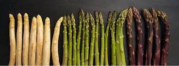
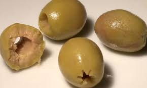

Angela Mayor
Henry
tarea de HTML/CSSS
Mi comida favorita son las verduras y las ensaladas bien frescas: pastas con verduras, y legumbres frescas como complemento como los esparragos, el tomate cherry, champiñones; ensaladas con una buena vinagreta y lechuga crespa, morada o rugula. No hay nada mejor que una pizza vegetariana con aceitunas. !Me encantan las aceitunas y las alcaparras!
Mi restaurante favorito
- Espárragos
- Aceitunas verdes o moradas, con relleno o sin relleno